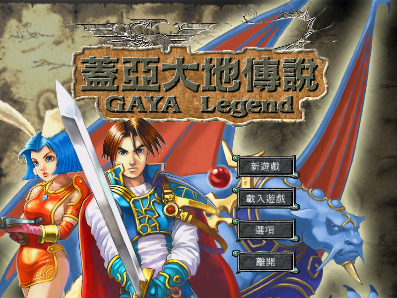
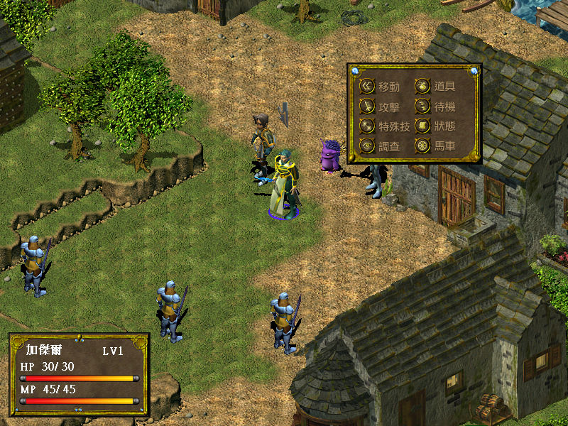

名稱：蓋亞大地傳說1 (GAYA Legend，中文版) 簡介：酷一科技2001年出品的策略角色扮演遊戲，由大宇代理發行 [待補]。   保護：光碟 備註：第4片光碟為純音樂欣賞用，遊戲用不到。 備註：XP以上系統安裝時，要將Install.exe設定成Win9x相容。 備註：安裝或解除完畢後，並不會自動關閉視窗，必須自行手動關閉。 備註：VirtualBox需搭配DxWnd（可全螢幕）。

